Números Complejos
Introducción
Si necesitara describir la distancia entre dos ciudades, podría dar una respuesta que consistiera en un solo número en millas, kilómetros o alguna otra unidad de medida lineal. Sin embargo, si tuviera que describir cómo viajar de una ciudad a otra, tendría que proporcionar más información que solo la distancia entre esas dos ciudades; También tendría que proporcionar información sobre eldirecciónviajar también.
El tipo de información que expresa una sola dimensión, como la distancia lineal, se llamaescalarcantidad en matemáticas. Los números escalares son el tipo de números que ha utilizado en la mayoría de sus aplicaciones matemáticas hasta ahora. El voltaje producido por una batería, por ejemplo, es una cantidad escalar. También lo es la resistencia de un trozo de cable (ohmios) o la corriente que lo atraviesa (amperios).
Sin embargo, cuando comenzamos a analizar circuitos de corriente alterna, encontramos que cantidades de voltaje, corriente e incluso resistencia (llamadasimpedanciaen CA) no son las cantidades unidimensionales familiares que estamos acostumbrados a medir en circuitos de CC. Más bien, estas cantidades, debido a que son dinámicas (alternan en dirección y amplitud), poseen otras dimensiones que deben tenerse en cuenta. La frecuencia y el cambio de fase son dos de estas dimensiones que entran en juego. Incluso con circuitos de CA relativamente simples, donde solo tratamos con una única frecuencia, todavía tenemos que lidiar con la dimensión del cambio de fase además de la amplitud.
Para analizar con éxito circuitos de CA, necesitamos trabajar con objetos y técnicas matemáticas capaces de representar estas cantidades multidimensionales. Aquí es donde debemos abandonar los números escalares por algo más adecuado:números complejos. Al igual que en el ejemplo de dar direcciones de una ciudad a otra, las cantidades de CA en un circuito de frecuencia única tienen amplitud (analogía: distancia) y cambio de fase (analogía: dirección). Un número complejo es una cantidad matemática única capaz de expresar estas dos dimensiones de amplitud y cambio de fase a la vez.
Los números complejos son más fáciles de entender cuando se representan gráficamente. Si trazo una línea con una determinada longitud (magnitud) y ángulo (dirección), tengo una representación gráfica de un número complejo que se conoce comúnmente en física comovector: (Cifraa continuación)
{kind=link}
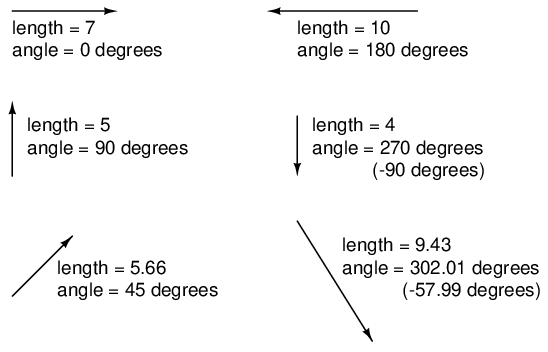
Un vector tiene magnitud y dirección.
Al igual que las distancias y las direcciones en un mapa, debe haber algún marco de referencia común para que las figuras de los ángulos tengan algún significado. En este caso, el derecho directo se considera 0.o, y los ángulos se cuentan en dirección positiva en sentido antihorario: (Figuraa continuación)
{kind=link}
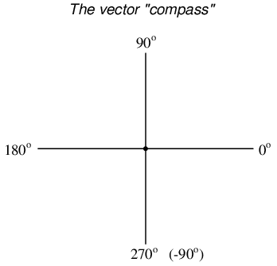
La brújula vectorial
La idea de representar un número en forma gráfica no es nada nuevo. Todos aprendimos esto en la escuela primaria con la “recta numérica” (Figuraa continuación)
{kind=link}
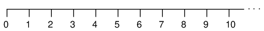
Recta numérica.
Incluso aprendimos cómo funcionan la suma y la resta al ver cómo se apilaban las longitudes (magnitudes) para dar una respuesta final: (Figuraa continuación)
{kind=link}
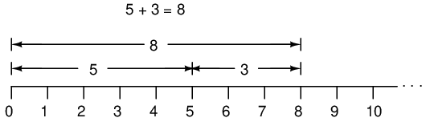
Suma en una “recta numérica”.
Más tarde supimos que había maneras de designar los valores.entrelos números enteros marcados en la línea. Estas eran cantidades fraccionarias o decimales: (Figuraa continuación)
{kind=link}
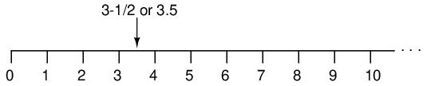
Ubicar una fracción en la “recta numérica”
Más tarde aprendimos que la recta numérica también podía extenderse hacia la izquierda del cero: (Figuraa continuación)
{kind=link}
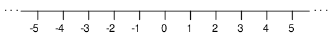
La “recta numérica” muestra números tanto positivos como negativos.
Estos campos de números (enteros, enteros, racionales, irracionales, reales, etc.) que se aprenden en la escuela primaria comparten un rasgo común: todos sonunidimensional. La rectitud de la recta numérica ilustra esto gráficamente. Puedes moverte hacia arriba o hacia abajo en la recta numérica, pero todo "movimiento" a lo largo de esa línea está restringido a un solo eje (horizontal). Los números escalares unidimensionales son perfectamente adecuados para contar cuentas, representar el peso o medir el voltaje de una batería de CC, pero no llegan a representar algo más complejo como la distancia.ydirección entre dos ciudades, o la amplitudyfase de una forma de onda de CA. Para representar este tipo de cantidades, necesitamos representaciones multidimensionales. En otras palabras, necesitamos una recta numérica que pueda apuntar en diferentes direcciones, y eso es exactamente lo que es un vector.
- REVISAR:
- A escalarEl número es el tipo de objeto matemático que la gente está acostumbrada a utilizar en la vida cotidiana: una cantidad unidimensional como la temperatura, la longitud, el peso, etc.
- A numero complejoes una cantidad matemática que representa dos dimensiones de magnitud y dirección.
- A vectores una representación gráfica de un número complejo. Parece una flecha, con un punto de partida, una punta, una longitud definida y una dirección definida. A veces la palabrafasorse utiliza en aplicaciones eléctricas donde el ángulo del vector representa un cambio de fase entre formas de onda.
Vectores y formas de onda de CA
Bien, entonces, ¿cómo podemos representar exactamente cantidades de voltaje o corriente alterna en forma de vector? La longitud del vector representa la magnitud (o amplitud) de la forma de onda, así: (Figuraa continuación)
{kind=link}
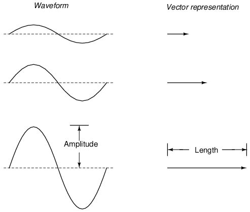
La longitud del vector representa la magnitud del voltaje de CA.
Cuanto mayor es la amplitud de la forma de onda, mayor es la longitud de su vector correspondiente. El ángulo del vector, sin embargo, representa el cambio de fase en grados entre la forma de onda en cuestión y otra forma de onda que actúa como "referencia" en el tiempo. Por lo general, cuando se expresa la fase de una forma de onda en un circuito, se hace referencia a la forma de onda del voltaje de la fuente de alimentación (arbitrariamente denominada "en" 0o). Recuerde que la fase es siempre unarelativomedición entre dos formas de onda en lugar de una propiedad absoluta. (Cifraa continuación) (Cifraa continuación)
{kind=link}
{kind=link}
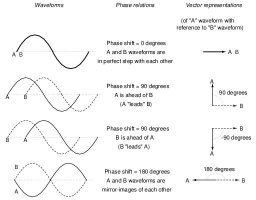
El ángulo vectorial es la fase con respecto a otra forma de onda.
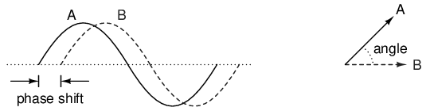
Desplazamiento de fase entre ondas y ángulo de fase vectorial.
Cuanto mayor sea el cambio de fase en grados entre dos formas de onda, mayor será la diferencia de ángulo entre los vectores correspondientes. Al ser una medida relativa, como el voltaje, el cambio de fase (ángulo vectorial) solo tiene significado en referencia a alguna forma de onda estándar. Generalmente, esta forma de onda de “referencia” es el voltaje de suministro de energía CA principal en el circuito. Si hay más de una fuente de voltaje CA, entonces una de esas fuentes se elige arbitrariamente como referencia de fase para todas las demás mediciones en el circuito.
Este concepto de punto de referencia no es diferente al del punto de “tierra” en un circuito en beneficio de la referencia de voltaje. Con un punto claramente definido en el circuito declarado como “tierra”, se hace posible hablar de voltaje “en” o “en” puntos individuales de un circuito, entendiéndose que esos voltajes (siempre relativos entretwopuntos) están referenciados a “tierra”. De manera correspondiente, con un punto de referencia claramente definido para la fase, resulta posible hablar de tensiones y corrientes en un circuito de CA que tienen ángulos de fase definidos. Por ejemplo, si la corriente en un circuito de CA se describe como “24,3 miliamperios a -64 grados”, significa que la forma de onda de la corriente tiene una amplitud de 24,3 mA y tiene un retraso de 64odetrás de la forma de onda de referencia, generalmente se supone que es la forma de onda de voltaje de la fuente principal.
- REVISAR:
- Cuando se usa para describir una cantidad de CA, la longitud de un vector representa la amplitud de la onda, mientras que el ángulo de un vector representa el ángulo de fase de la onda en relación con alguna otra forma de onda (de referencia).
Simple vector addition
Recuerde que los vectores son objetos matemáticos como los números en una recta numérica: se pueden sumar, restar, multiplicar y dividir. La suma es quizás la operación vectorial más fácil de visualizar, así que comenzaremos con eso. Si se suman vectores con ángulos comunes, sus magnitudes (longitudes) se suman como cantidades escalares regulares: (Figuraa continuación)
{kind=link}
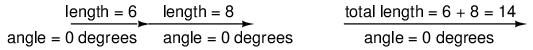
Las magnitudes vectoriales se suman como escalares para un ángulo común.
De manera similar, si fuentes de voltaje de CA con el mismo ángulo de fase se conectan en serie, sus voltajes se suman tal como se podría esperar con las baterías de CC: (Figuraa continuación)
{kind=link}
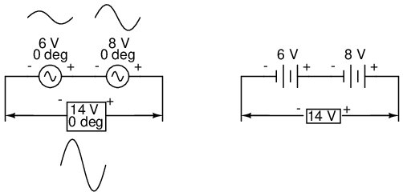
Los voltajes de CA “en fase” se suman como voltajes de batería de CC.
Tenga en cuenta las marcas de polaridad (+) y (-) junto a los cables de las dos fuentes de CA. Aunque sabemos que la CA no tiene “polaridad” en el mismo sentido que la CC, estas marcas son esenciales para saber cómo hacer referencia a los ángulos de fase dados de los voltajes. Esto será más evidente en el siguiente ejemplo.
Si los vectores se oponen directamente entre sí (180ofuera de fase) se suman, sus magnitudes (longitudes) se restan al igual que las cantidades escalares positivas y negativas se restan cuando se suman: (Figuraa continuación)
{kind=link}
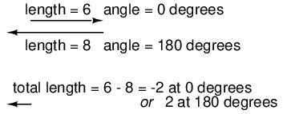
Las magnitudes vectoriales directamente opuestas se restan.
De manera similar, si se conectan en serie fuentes de voltaje de CA opuestas, sus voltajes se restan como se podría esperar con baterías de CC conectadas de manera opuesta: (Figuraa continuación)
{kind=link}
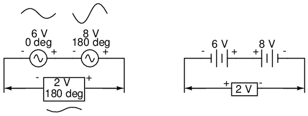
Los voltajes de CA opuestos se restan como los voltajes de batería opuestos.
Determinar si estas fuentes de voltaje están opuestas entre sí requiere un examen de sus marcas de polaridad.ysus ángulos de fase. Observe cómo las marcas de polaridad en el diagrama anterior parecen indicar voltajes aditivos (de izquierda a derecha, vemos - y + en la fuente de 6 voltios, - y + en la fuente de 8 voltios). Aunque estas marcas de polaridad normalmente indicarían unaaditivoefecto en un circuito de CC (los dos voltajes trabajan juntos para producir un voltaje total mayor), en este circuito de CA en realidad están empujando en direcciones opuestas porque uno de esos voltajes tiene un ángulo de fase de 0oy el otro un ángulo de fase de 180o. El resultado, por supuesto, es un voltaje total de 2 voltios.
También podríamos haber mostrado los voltajes opuestos restando en serie como este: (Figuraa continuación)
{kind=link}
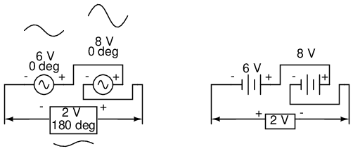
Voltajes opuestos a pesar de tener ángulos de fase iguales.
Observe cómo las polaridades parecen oponerse entre sí ahora, debido a la inversión de las conexiones de los cables en la fuente de 8 voltios. Dado que se describe que ambas fuentes tienen ángulos de fase iguales (0o), realmente se oponen entre sí, y el efecto general es el mismo que en el escenario anterior con polaridades "aditivas" y diferentes ángulos de fase: un voltaje total de sólo 2 voltios. (Cifraa continuación)
{kind=link}
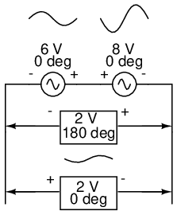
Así como hay dos formas de expresar la fase de las fuentes, también hay dos formas de expresar la resultante de su suma.
El voltaje resultante se puede expresar de dos maneras diferentes: 2 voltios a 180ocon el símbolo (-) a la izquierda y el símbolo (+) a la derecha, o 2 voltios a 0ocon el símbolo (+) a la izquierda y el símbolo (-) a la derecha. Una inversión de los cables de una fuente de voltaje de CA es lo mismo que un cambio de fase de esa fuente en 180o. (Cifraa continuación)
{kind=link}
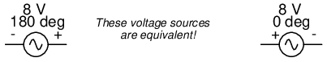
Ejemplo de fuentes de voltaje equivalentes.
Complex vector addition
Si se suman vectores con ángulos poco comunes, sus magnitudes (longitudes) suman de manera bastante diferente a la de las magnitudes escalares: (Figuraa continuación)
{kind=link}
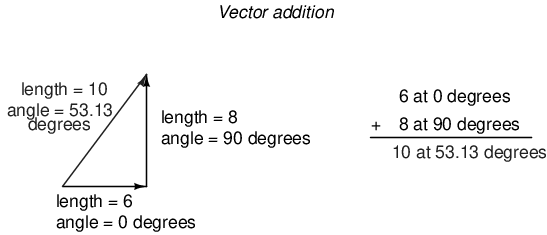
Las magnitudes vectoriales no se suman directamente para ángulos desiguales.
Si dos voltajes CA -- 90ofuera de fase: se suman al conectarse en serie, sus magnitudes de voltaje no se suman ni restan directamente como ocurre con los voltajes escalares en CC. En cambio, estas cantidades de voltaje son cantidades complejas y, al igual que los vectores anteriores, que se suman de forma trigonométrica, una fuente de 6 voltios en 0oagregado a una fuente de 8 voltios a 90oda como resultado 10 voltios en un ángulo de fase de 53,13o: (Cifraa continuación)
{kind=link}
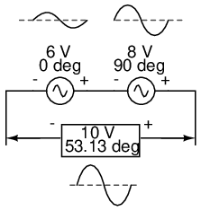
Las fuentes de 6 V y 8 V suman 10 V con la ayuda de la trigonometría.
Comparado con el análisis de circuitos de CC, esto es realmente muy extraño. Tenga en cuenta que es posible obtener indicaciones del voltímetro de 6 y 8 voltios, respectivamente, a través de las dos fuentes de voltaje de CA, ¡pero solo lea 10 voltios para un voltaje total!
No existe una analogía de CC adecuada para lo que estamos viendo aquí con dos voltajes de CA ligeramente desfasados. Los voltajes de CC solo pueden ayudar o oponerse directamente, sin nada intermedio. Con CA, dos voltajes pueden ayudarse o oponerse entre sí.en cualquier gradoentre quienes apoyan plenamente y quienes se oponen plenamente, inclusivo. Sin el uso de notación vectorial (número complejo) para describir cantidades de CA, seríamuyEs difícil realizar cálculos matemáticos para el análisis de circuitos de CA.
En la siguiente sección, aprenderemos cómo representar cantidades vectoriales en forma simbólica en lugar de gráfica. Los diagramas vectoriales y triangulares son suficientes para ilustrar el concepto general, pero se deben utilizar métodos de simbolismo más precisos si se van a realizar cálculos serios sobre estas cantidades.
- REVISAR:
- Los voltajes de CC solo pueden ayudarse o oponerse directamente entre sí cuando se conectan en serie. Los voltajes de CA pueden ayudar u oponerseen cualquier gradodependiendo del cambio de fase entre ellos.
Notación polar y rectangular
Para trabajar con estos números complejos sin dibujar vectores, primero necesitamos algún tipo de notación matemática estándar. Hay dos formas básicas de notación de números complejos:polar y rectangular.
La forma polar es donde un número complejo se denota por lalongitud(también conocido como elmagnitud, valor absoluto, omódulo) y elángulode su vector (generalmente indicado por un símbolo de ángulo que se ve así: ∠). Para usar la analogía del mapa, la notación polar para el vector de la ciudad de Nueva York a San Diego sería algo así como “2400 millas, suroeste”. Aquí hay dos ejemplos de vectores y sus notaciones polares: (Figuraa continuación)
{kind=link}
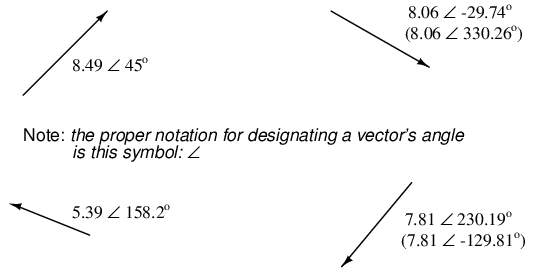
Vectores con notaciones polares.
La orientación estándar para los ángulos vectoriales en los cálculos de circuitos de CA define 0ocomo a la derecha (horizontal), haciendo 90ohacia arriba, 180oa la izquierda y 270ohacia abajo. Tenga en cuenta que los vectores con un ángulo "hacia abajo" pueden tener ángulos representados en forma polar como números positivos superiores a 180 o números negativos inferiores a 180. Por ejemplo, un vector con un ángulo de ∠ 270o(hacia abajo) también se puede decir que tiene un ángulo de -90o. (Cifraa continuación) El vector de arriba a la derecha (7.81 ∠ 230.19o) también se puede denotar como 7,81 ∠ -129,81o.
{kind=link}
La brújula vectorial
La forma rectangular, por otro lado, es donde un número complejo se denota por sus respectivos componentes horizontales y verticales. En esencia, el vector angular se considera la hipotenusa de un triángulo rectángulo, descrita por las longitudes de los lados adyacentes y opuestos. En lugar de describir la longitud y dirección de un vector denotando magnitud y ángulo, se describe en términos de “qué tan lejos hacia la izquierda/derecha” y “qué tan lejos hacia arriba/abajo”.
Estas figuras bidimensionales (horizontal y vertical) están simbolizadas por dos cifras numéricas. Para distinguir las dimensiones horizontal y vertical entre sí, la vertical tiene como prefijo una “i” minúscula (en matemáticas puras) o una “j” (en electrónica). Estas letras minúsculas no representan una variable física (como la corriente instantánea, también simbolizada por una letra “i” minúscula), sino que son matemáticas.operadoresSe utiliza para distinguir el componente vertical del vector de su componente horizontal. Como número complejo completo, las cantidades horizontales y verticales se escriben como una suma: (Figuraa continuación)
{kind=link}
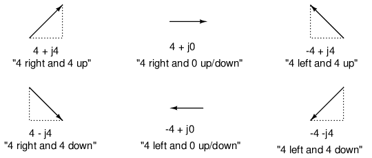
En forma "rectangular", la longitud y dirección del vector se indican en términos de su extensión horizontal y vertical, el primer número representa las dimensiones horizontales ("real") y el segundo número (con el prefijo "j") representa las dimensiones verticales ("imaginarias").
La componente horizontal se conoce comorealcomponente, ya que esa dimensión es compatible con números escalares normales (“reales”). La componente vertical se conoce comoimaginariocomponente, ya que esa dimensión se encuentra en una dirección diferente, totalmente ajena a la escala de los números reales. (Cifraa continuación)
{kind=link}
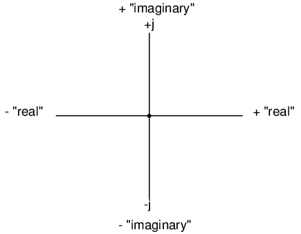
Brújula vectorial que muestra ejes reales e imaginarios.
El eje "real" del gráfico corresponde a la familiar recta numérica que vimos antes: la que tiene valores positivos y negativos. El eje “imaginario” del gráfico corresponde a otra recta numérica situada en 90oal “real”. Como los vectores son cosas bidimensionales, debemos tener un “mapa” bidimensional sobre el cual expresarlos, de ahí las dos rectas numéricas perpendiculares entre sí: (Figuraa continuación)
{kind=link}
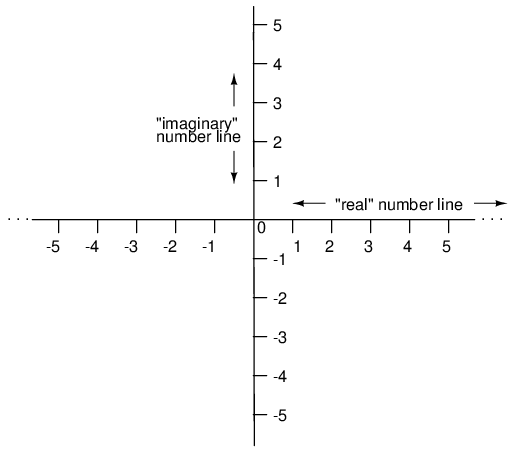
Brújula vectorial con rectas numéricas reales e imaginarias (“j”).
Cualquiera de los métodos de notación es válido para números complejos. La razón principal para tener dos métodos de notación es la facilidad de cálculo manual, la forma rectangular que se presta para la suma y la resta, y la forma polar que se presta para la multiplicación y la división.
La conversión entre las dos formas de notación implica trigonometría simple. Para convertir de polar a rectangular, encuentre la componente real multiplicando la magnitud polar por el coseno del ángulo y la componente imaginaria multiplicando la magnitud polar por el seno del ángulo. Esto se puede entender más fácilmente dibujando las cantidades como lados de un triángulo rectángulo, representando la hipotenusa del triángulo el vector mismo (su longitud y ángulo con respecto a la horizontal constituyen la forma polar), representando los lados horizontal y vertical las componentes rectangulares “reales” e “imaginarias”, respectivamente: (Figuraa continuación)
{kind=link}
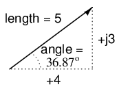
Vector de magnitud en términos de componentes real (4) e imaginaria (j3).
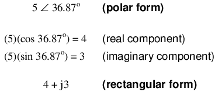
Para convertir de rectangular a polar, encuentre la magnitud polar mediante el uso del teorema de Pitágoras (la magnitud polar es la hipotenusa de un triángulo rectángulo, y los componentes real e imaginario son los lados adyacentes y opuestos, respectivamente), y el ángulo tomando el arcotangente del componente imaginario dividido por el componente real:
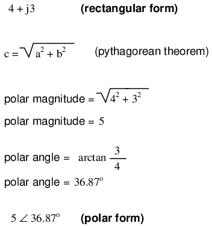
- REVISAR:
- PolarLa notación denota un número complejo en términos de la longitud de su vector y la dirección angular desde el punto inicial. Ejemplo: volar 45 millas ∠ 203o(Oeste por suroeste).
- RectangularLa notación denota un número complejo en términos de sus dimensiones horizontales y verticales. Ejemplo: conduzca 41 millas al oeste, luego gire y conduzca 18 millas al sur.
- En notación rectangular, la primera cantidad es el componente "real" (dimensión horizontal del vector) y la segunda cantidad es el componente "imaginario" (dimensión vertical del vector). El componente imaginario está precedido por una “j” minúscula, a veces llamadaoperador j.
- Tanto la forma polar como la rectangular de notación para un número complejo se pueden relacionar gráficamente en la forma de un triángulo rectángulo, donde la hipotenusa representa el vector mismo (forma polar: longitud de la hipotenusa = magnitud; ángulo con respecto al lado horizontal = ángulo), el lado horizontal representa el componente "real" rectangular y el lado vertical representa el componente "imaginario" rectangular.
Complex number arithmetic
Dado que los números complejos son entidades matemáticas legítimas, al igual que los números escalares, se pueden sumar, restar, multiplicar, dividir, elevar al cuadrado, invertir y demás, como cualquier otro tipo de número. Algunas calculadoras científicas están programadas para realizar estas operaciones directamente con dos o más números complejos, pero estas operaciones también se pueden realizar “a mano”. Esta sección le mostrará cómo se realizan las operaciones básicas. EsmuySe recomienda equiparse con una calculadora científica capaz de realizar fácilmente funciones aritméticas con números complejos. Hará que su estudio del circuito de CA sea mucho más placentero que si se viera obligado a hacer todos los cálculos por el camino más largo.
La suma y resta de números complejos en forma rectangular es fácil. Para la suma, simplemente sume los componentes reales de los números complejos para determinar el componente real de la suma, y sume los componentes imaginarios de los números complejos para determinar el componente imaginario de la suma:
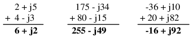
Al restar números complejos en forma rectangular, simplemente reste el componente real del segundo número complejo del componente real del primero para llegar al componente real de la diferencia, y reste el componente imaginario del segundo número complejo del componente imaginario del primero para llegar al componente imaginario de la diferencia:
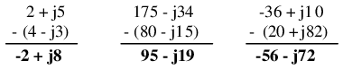
Para multiplicaciones y divisiones manuales, la notación polar es la preferida para trabajar. Al multiplicar números complejos en forma polar, simplementemultiplicarlas magnitudes polares de los números complejos para determinar la magnitud polar del producto, yaddlos ángulos de los números complejos para determinar el ángulo del producto:
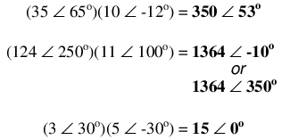
La división de números complejos en forma polar también es fácil: simplemente divide la magnitud polar del primer número complejo por la magnitud polar del segundo número complejo para llegar a la magnitud polar del cociente, y resta el ángulo del segundo número complejo del ángulo del primer número complejo para llegar al ángulo del cociente:
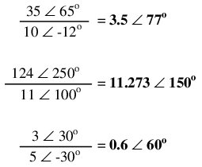
Para obtener el recíproco, o “invertido” (1/x), de un número complejo, simplemente divide el número (en forma polar) en un valor escalar de 1, que no es más que un número complejo sin componente imaginario (ángulo = 0):
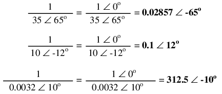
Estas son las operaciones básicas que necesitarás saber para manipular números complejos en el análisis de circuitos de CA. Sin embargo, las operaciones con números complejos no se limitan únicamente a la suma, resta, multiplicación, división e inversión. Prácticamente cualquier operación aritmética que se pueda realizar con números escalares se puede realizar con números complejos, incluidas potencias, raíces, resolución de ecuaciones simultáneas con coeficientes complejos e incluso funciones trigonométricas (aunque esto implica una perspectiva completamente nueva en trigonometría llamadafunciones hiperbólicaslo cual está mucho más allá del alcance de esta discusión). Asegúrese de estar familiarizado con las operaciones aritméticas básicas de suma, resta, multiplicación, división e inversión, y tendrá pocos problemas con el análisis de circuitos de CA.
- REVISAR:
- Para sumar números complejos en forma rectangular, suma los componentes reales y suma los componentes imaginarios. La resta es similar.
- Para multiplicar números complejos en forma polar, multiplica las magnitudes y suma los ángulos. Para dividir, divide las magnitudes y resta un ángulo del otro.
More on AC "polarity"
Los números complejos son útiles para el análisis de circuitos de CA porque proporcionan un método conveniente para indicar simbólicamente el cambio de fase entre cantidades de CA como el voltaje y la corriente. Sin embargo, para la mayoría de las personas la equivalencia entre vectores abstractos y cantidades de circuitos reales no es fácil de comprender. Anteriormente en este capítulo vimos cómo a las fuentes de voltaje de CA se les dan cifras de voltaje en forma compleja (magnitudyángulo de fase), así como marcas de polaridad. Dado que la corriente alterna no tiene una “polaridad” establecida como la corriente continua, estas marcas de polaridad y su relación con el ángulo de fase tienden a ser confusas. Esta sección está escrita en el intento de aclarar algunas de estas cuestiones.
El voltaje es inherentementerelativocantidad. Cuando medimos un voltaje, podemos elegir cómo conectar un voltímetro u otro instrumento de medición de voltaje a la fuente de voltaje, ya que hay dos puntos entre los cuales existe el voltaje y dos cables de prueba en el instrumento con los que realizar la conexión. En los circuitos de CC, denotamos explícitamente la polaridad de las fuentes de voltaje y las caídas de voltaje, usando símbolos "+" y "-", y utilizamos cables de prueba de medidor codificados por colores (rojo y negro). Si un voltímetro digital indica un voltaje CC negativo, sabemos que sus cables de prueba están conectados "al revés" al voltaje (el cable rojo está conectado al "-" y el cable negro al "+").
Las baterías tienen su polaridad designada a modo de simbología intrínseca: el lado de línea corta de una batería es siempre el lado negativo (-) y el lado de línea larga siempre el positivo (+): (Figuraa continuación)
{kind=link}
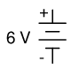
Polaridad de batería convencional.
Aunque sería matemáticamente correcto representar el voltaje de una batería como una cifra negativa con marcas de polaridad invertida, sería decididamente poco convencional: (Figuraa continuación)
{kind=link}
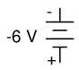
Marcado de polaridad claramente poco convencional.
Interpretar dicha notación podría ser más fácil si las marcas de polaridad “+” y “-” se vieran como puntos de referencia para los cables de prueba del voltímetro, donde “+” significa “rojo” y “-” significa “negro”. Un voltímetro conectado a la batería anterior con un cable rojo al terminal inferior y un cable negro al terminal superior indicaría un voltaje negativo (-6 voltios). En realidad, esta forma de notación e interpretación no es tan inusual como podría pensar: se encuentra comúnmente en problemas de análisis de redes de CC donde las marcas de polaridad “+” y “-” se dibujan inicialmente según una suposición fundamentada y luego se interpretan como correctas o “al revés” según el signo matemático de la cifra calculada.
Sin embargo, en los circuitos de CA no tratamos con cantidades “negativas” de voltaje. En cambio, describimos hasta qué punto un voltaje ayuda o se opone a otro mediantefase: el cambio de tiempo entre dos formas de onda. Nunca describimos un voltaje de CA como de signo negativo, porque la facilidad de la notación polar permite vectores que apunten en una dirección opuesta. Si un voltaje CA se opone directamente a otro voltaje CA, simplemente decimos que uno es 180odesfasado con el otro.
Aún así, el voltaje es relativo entre dos puntos y podemos elegir cómo conectar un instrumento de medición de voltaje entre esos dos puntos. El signo matemático de la lectura de un voltímetro de CC tiene significado sólo en el contexto de las conexiones de sus cables de prueba: qué terminal toca el cable rojo y qué terminal toca el cable negro. Asimismo, el ángulo de fase de una tensión alterna tiene significado sólo en el contexto de saber cuál de los dos puntos se considera el punto de “referencia”. Debido a este hecho, las marcas de polaridad “+” y “-” a menudo se colocan junto a los terminales de un voltaje de CA en diagramas esquemáticos para darle un marco de referencia al ángulo de fase indicado.
Repasemos estos principios con algunas ayudas gráficas. Primero, el principio de relacionar las conexiones de los cables de prueba con el signo matemático de la indicación de un voltímetro de CC: (Figuraa continuación)
{kind=link}
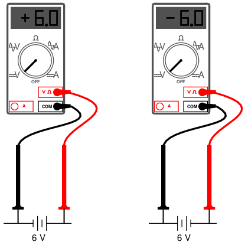
Los colores de los cables de prueba proporcionan un marco de referencia para interpretar el signo (+ o -) de la indicación del medidor.
El signo matemático de la pantalla de un voltímetro digital de CC tiene significado sólo en el contexto de las conexiones de sus cables de prueba. Considere el uso de un voltímetro de CC para determinar si dos fuentes de voltaje de CC se ayudan o se oponen entre sí, suponiendo que ambas fuentes no están etiquetadas en cuanto a sus polaridades. Usando el voltímetro para medir a través de la primera fuente: (Figuraa continuación)
{kind=link}
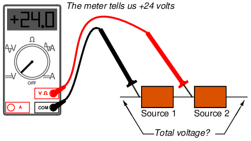
(+) La lectura indica que el negro es (-), el rojo es (+).
Esta primera medición de +24 a través de la fuente de voltaje del lado izquierdo nos dice que el cable negro del medidor realmente está tocando el lado negativo de la fuente de voltaje n.° 1, y que el cable rojo del medidor realmente está tocando el lado positivo. Por lo tanto, sabemos que la fuente n.° 1 es una batería orientada en esta orientación: (Figuraa continuación)
{kind=link}
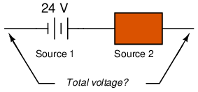
24V source is polarized (-) to (+).
Medición de la otra fuente de voltaje desconocida: (Figuraa continuación)
{kind=link}
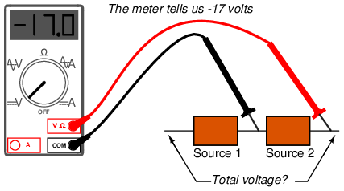
(-) La lectura indica que el negro es (+), el rojo es (-).
Esta segunda lectura del voltímetro, sin embargo, es unanegativo(-) 17 voltios, lo que nos indica que el cable de prueba negro en realidad está tocando el lado positivo de la fuente de voltaje n.° 2, mientras que el cable de prueba rojo en realidad está tocando el lado negativo. Por lo tanto, sabemos que la fuente #2 es una batería orientada hacia elopuestodirección: (Figuraa continuación)
{kind=link}
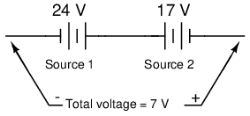
17V source is polarized (+) to (-)
Debería ser obvio para cualquier estudiante experimentado en electricidad CC que estas dos baterías están opuestas entre sí. Por definición, los voltajes opuestossustraeruno del otro, por lo que restamos 17 voltios de 24 voltios para obtener el voltaje total entre los dos: 7 voltios.
Sin embargo, podríamos dibujar las dos fuentes como cuadros anodinos, etiquetados con las cifras exactas de voltaje obtenidas por el voltímetro, las marcas de polaridad indican la ubicación de los cables de prueba del voltímetro: (Figuraa continuación)
{kind=link}
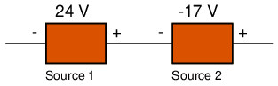
Lecturas del voltímetro leídas en medidores.
Según este diagrama, las marcas de polaridad (que indican la ubicación de los cables de prueba del medidor) indican las fuentesayudandoentre sí. Por definición, fuentes de tensión auxiliares.addentre sí para formar el voltaje total, por lo que sumamos 24 voltios a -17 voltios para obtener 7 voltios: sigue siendo la respuesta correcta. Si dejamos que las marcas de polaridad guíen nuestra decisión de sumar o restar cifras de voltaje, ya sea que esas marcas de polaridad representen laverdaderopolaridad o simplemente la orientación del cable de prueba del medidor, e incluimos los signos matemáticos de esas cifras de voltaje en nuestros cálculos, el resultado siempre será correcto. Nuevamente, las marcas de polaridad sirven comomarcos de referenciapara colocar los signos matemáticos de las cifras de voltaje en el contexto adecuado.
Lo mismo es cierto para los voltajes de CA, excepto queángulo de fasesustitutos de matemáticafirmar. Para relacionar múltiples voltajes de CA con diferentes ángulos de fase entre sí, necesitamos marcas de polaridad para proporcionar marcos de referencia para los ángulos de fase de esos voltajes. (Cifraa continuación)
{kind=link}
Tomemos por ejemplo el siguiente circuito:
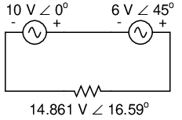
El ángulo de fase sustituye al signo ±.
Las marcas de polaridad muestran que estas dos fuentes de voltaje se ayudan entre sí, por lo que para determinar el voltaje total a través de la resistencia debemosaddlas cifras de voltaje de 10 V ∠ 0oy 6 V ∠ 45ojuntos para obtener 14.861 V ∠ 16.59o. Sin embargo, sería perfectamente aceptable representar la fuente de 6 voltios como 6 V ∠ 225o, con un conjunto de marcas de polaridad invertida, y aún así llegar al mismo voltaje total: (Figuraa continuación)
{kind=link}
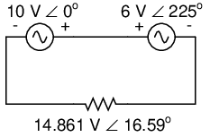
Invertir los cables del voltímetro en la fuente de 6 V cambia el ángulo de fase en 180o.
6 V ∠ 45ocon negativo a la izquierda y positivo a la derecha es exactamente igual a 6 V ∠ 225ocon positivo a la izquierda y negativo a la derecha: la inversión de las marcas de polaridad complementa perfectamente la adición de 180oa la designación del ángulo de fase: (Figuraa continuación)
{kind=link}
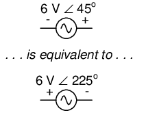
La inversión de polaridad añade 180oal ángulo de fase
A diferencia de las fuentes de voltaje CC, cuyos símbolos definen intrínsecamente la polaridad mediante líneas cortas y largas, los símbolos de voltaje CA no tienen marcas de polaridad intrínseca. Por lo tanto, cualquier marca de polaridad debe incluirse como símbolo adicional en el diagrama y no existe una forma "correcta" de colocarla. Sin embargo, deben correlacionarse con el ángulo de fase dado para representar la verdadera relación de fase de ese voltaje con otros voltajes en el circuito.
- REVISAR:
- A veces se dan marcas de polaridad a los voltajes de CA en los esquemas de circuitos para proporcionar un marco de referencia para sus ángulos de fase.
Algunos ejemplos con circuitos de CA
Conectemos tres fuentes de voltaje de CA en serie y usemos números complejos para determinar voltajes aditivos. Todas las reglas y leyes aprendidas en el estudio de los circuitos de CC se aplican también a los circuitos de CA (ley de Ohm, leyes de Kirchhoff, métodos de análisis de redes), con excepción de los cálculos de potencia (ley de Joule). La única salvedad es que todas las variablesdebeexpresarse en forma compleja, teniendo en cuenta tanto la fase como la magnitud, y todos los voltajes y corrientes deben ser de la misma frecuencia (para que sus relaciones de fase permanezcan constantes). (Cifraa continuación)
{kind=link}
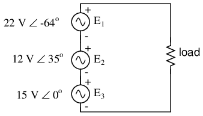
KVL permite la adición de voltajes complejos.
Las marcas de polaridad para las tres fuentes de voltaje están orientadas de tal manera que sus voltajes indicados deben sumarse para obtener el voltaje total a través de la resistencia de carga. Observe que aunque se proporciona la magnitud y el ángulo de fase para cada fuente de voltaje de CA, no se especifica ningún valor de frecuencia. Si este es el caso, se supone que todas las frecuencias son iguales, cumpliendo así con nuestros requisitos para aplicar reglas de CC a un circuito de CA (todas las cifras se dan en forma compleja, todas de la misma frecuencia). La configuración de nuestra ecuación para encontrar el voltaje total aparece como tal:
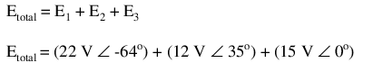
Gráficamente, los vectores se suman como se muestra en la Figuraa continuación.
{kind=link}
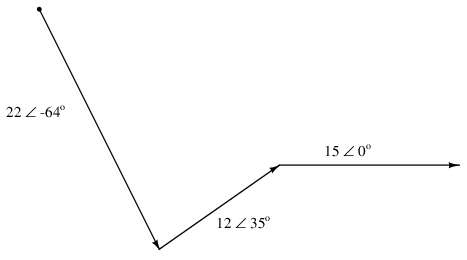
Suma gráfica de voltajes vectoriales.
La suma de estos vectores será un vector resultante que se originará en el punto inicial del vector de 22 voltios (punto en la parte superior izquierda del diagrama) y terminará en el punto final del vector de 15 voltios (punta de flecha en el centro derecho del diagrama): (Figuraa continuación)
{kind=link}
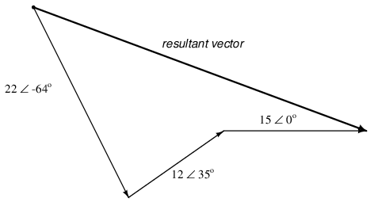
La resultante es equivalente a la suma vectorial de los tres voltajes originales.
Para determinar cuál es la magnitud y el ángulo del vector resultante sin recurrir a imágenes gráficas, podemos convertir cada uno de estos números complejos de forma polar a forma rectangular y sumar. Recuerde, somosagregandoEstas cifras juntas porque las marcas de polaridad de las tres fuentes de voltaje están orientadas de manera aditiva:
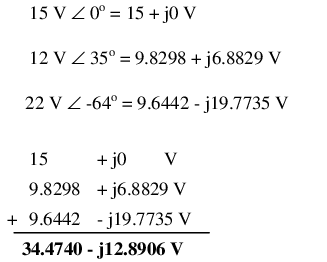
En forma polar, esto equivale a 36,8052 voltios ∠ -20,5018o. Lo que esto significa en términos reales es que el voltaje medido a través de estas tres fuentes de voltaje será de 36,8052 voltios, retrasado con respecto a los 15 voltios (0oreferencia de fase) por 20.5018o. Un voltímetro conectado a través de estos puntos en un circuito real solo indicaría la magnitud polar del voltaje (36,8052 voltios), no el ángulo. Se podría usar un osciloscopio para mostrar dos formas de onda de voltaje y así proporcionar una medición de cambio de fase, pero no un voltímetro. El mismo principio se aplica a los amperímetros de CA: indican la magnitud polar de la corriente, no el ángulo de fase.
Esto es extremadamente importante al relacionar las cifras calculadas de voltaje y corriente con circuitos reales. Aunque la notación rectangular es conveniente para la suma y la resta, y de hecho fue el paso final en nuestro problema de muestra aquí, no es muy aplicable a las mediciones prácticas. Las figuras rectangulares deben convertirse a figuras polares (específicamente polares).magnitud) antes de que puedan relacionarse con mediciones de circuitos reales.
Podemos utilizar SPICE para verificar la exactitud de nuestros resultados. En este circuito de prueba, el valor de la resistencia de 10 kΩ es bastante arbitrario. Está ahí para que SPICE no declare un error de circuito abierto y anule el análisis. Además, la elección de las frecuencias para la simulación (60 Hz) es bastante arbitraria, porque las resistencias responden uniformemente para todas las frecuencias de voltaje y corriente CA. Hay otros componentes (en particular, condensadores e inductores) que no responden uniformemente a diferentes frecuencias, ¡pero ese es otro tema! (Cifraa continuación)
{kind=link}
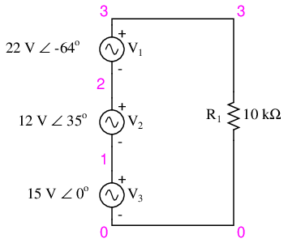
Esquema del circuito de especias.
ac voltage addition v1 1 0 ac 15 0 sin v2 2 1 ac 12 35 sin v3 3 2 ac 22 -64 sin r1 3 0 10k .ac lin 1 60 60 I'm using a frequency of 60 Hz .print ac v(3,0) vp(3,0) as a default value .end
freq v(3) vp(3) 6.000E+01 3.681E+01 -2.050E+01
Efectivamente, obtenemos un voltaje total de 36,81 voltios ∠ -20,5o(con referencia a la fuente de 15 voltios, cuyo ángulo de fase se estableció arbitrariamente en cero grados para ser la forma de onda de “referencia”).
A primera vista, esto resulta contrario a la intuición. ¿Cómo es posible obtener un voltaje total de poco más de 36 voltios con suministros de 15 voltios, 12 voltios y 22 voltios conectados en serie? Con CC, esto sería imposible, ya que las cifras de voltaje se sumarán o restarán directamente, dependiendo de la polaridad. Pero con AC, nuestra “polaridad” (cambio de fase) puede variar entre una total ayuda y una total oposición, y esto permite una suma tan paradójica.
¿Qué pasaría si tomáramos el mismo circuito e invirtiéramos una de las conexiones del suministro? Su contribución al voltaje total sería entonces la opuesta a la que era antes: (Figuraa continuación)
{kind=link}
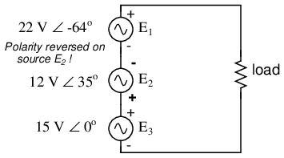
Polaridad de E2(12V) se invierte.
Tenga en cuenta que el ángulo de fase del suministro de 12 voltios todavía se denomina 35o, aunque las tendencias se han invertido. Recuerde que el ángulo de fase de cualquier caída de voltaje se indica en referencia a su polaridad anotada. Aunque el ángulo todavía está escrito como 35o, el vector se dibujará 180oopuesto a lo que era antes: (Figuraa continuación)
{kind=link}
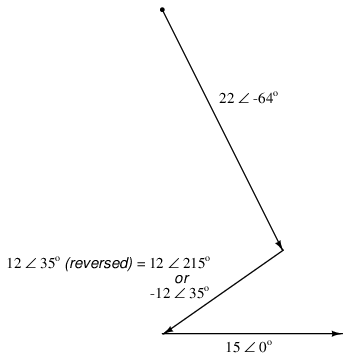
Dirección de E2está al revés.
El vector resultante (suma) debe comenzar en el punto superior izquierdo (origen del vector de 22 voltios) y terminar en la punta de la flecha derecha del vector de 15 voltios: (Figuraa continuación)
{kind=link}
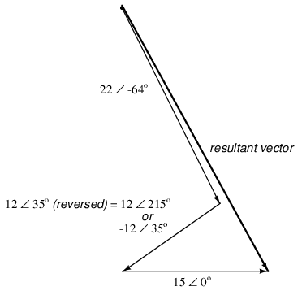
El resultado es la suma vectorial de fuentes de voltaje.
La inversión de la conexión en la alimentación de 12 voltios se puede representar de dos maneras diferentes en forma polar: sumando 180oa su ángulo vectorial (lo que lo convierte en 12 voltios ∠ 215o), o una inversión de signo en la magnitud (haciéndola -12 voltios ∠ 35o). De cualquier manera, la conversión a forma rectangular produce el mismo resultado:
La suma resultante de voltajes en forma rectangular, entonces:
En forma polar, esto equivale a 30,4964 V ∠ -60,9368o. Una vez más, usaremos SPICE para verificar los resultados de nuestros cálculos:
ac voltage addition v1 1 0 ac 15 0 sin v2 1 2 ac 12 35 sin Note the reversal of node numbers 2 y 1 v3 3 2 ac 22 -64 sin to simulate the swapping of connections r1 3 0 10k .ac lin 1 60 60 .print ac v(3,0) vp(3,0) .end
freq v(3) vp(3) 6.000E+01 3.050E+01 -6.094E+01
- REVISAR:
- Todas las leyes y reglas de los circuitos de CC se aplican a los circuitos de CA, con la excepción de los cálculos de potencia (Ley de Joule), siempre que todos los valores se expresen y manipulen en forma compleja y todos los voltajes y corrientes estén a la misma frecuencia.
- Al invertir la dirección de un vector (equivalente a invertir la polaridad de una fuente de voltaje CA en relación con otras fuentes de voltaje), se puede expresar de dos maneras diferentes: sumando 180oal ángulo, o invirtiendo el signo de la magnitud.
- Las mediciones del medidor en un circuito de CA corresponden a lasmagnitudes polaresde los valores calculados. Las expresiones rectangulares de cantidades complejas en un circuito de CA no tienen equivalente empírico directo, aunque son convenientes para realizar sumas y restas, como lo requieren las leyes de voltaje y corriente de Kirchhoff.
Colaboradores
Los contribuyentes a este capítulo se enumeran en orden cronológico de sus contribuciones, desde el más reciente hasta el primero. Consulte el Apéndice 2 (Lista de colaboradores) para fechas e información de contacto.
Jason Stark(Junio de 2000): Formato de documentos HTML, que dio lugar a una segunda edición mucho más atractiva.
Lecciones en circuitos eléctricoscopyright (C) 2000-2023 Tony R. Kuphaldt, según los términos y condiciones delCC BY License.